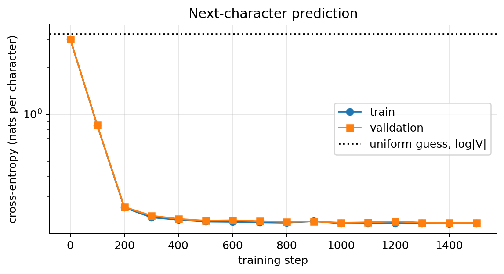
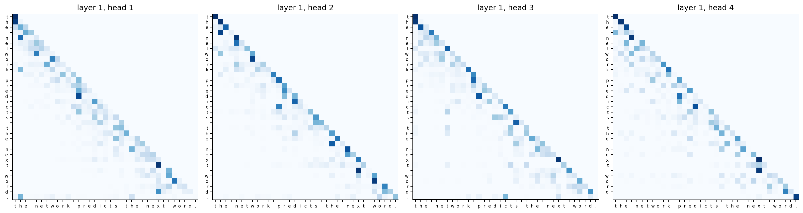
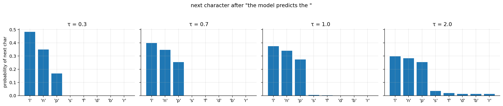
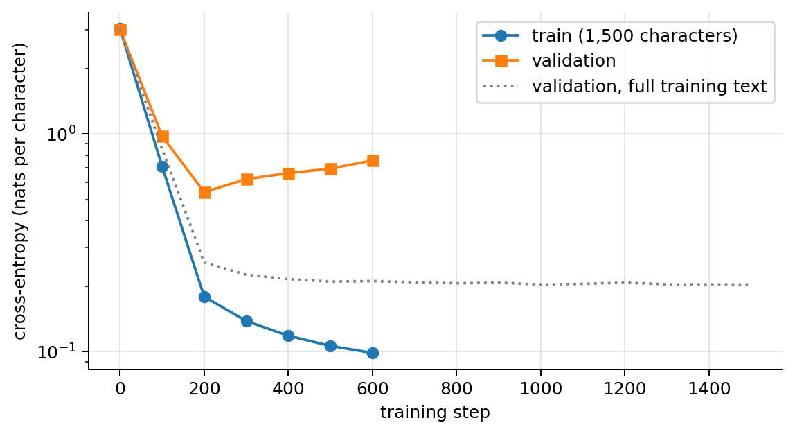
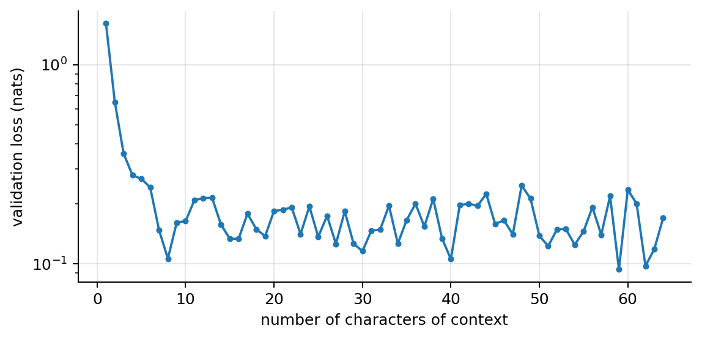

import math, re
import numpy as np
import matplotlib.pyplot as plt
import torch, torch.nn as nn, torch.nn.functional as F
plt.rcParams.update({"figure.dpi": 90, "axes.grid": True, "grid.alpha": 0.3,
"axes.spines.top": False, "axes.spines.right": False})
rng = np.random.default_rng(0); torch.manual_seed(0); torch.set_num_threads(4)05 · Attention, Transformers and Text Generation
What this note covers. Attention, the mechanism that lets every position of a sequence read directly from every other position, and the transformer built from it. We start from the bottleneck of recurrent encoders, build attention as a soft dictionary lookup (with numbers), write self-attention in matrix form, derive the \(\sqrt{d_k}\) scaling, multi-head attention, positional encodings and the causal mask, count the 124M parameters of GPT-2 small, and derive the cost of attention (\(O(n^2d)\)) against the MLP (\(O(nd^2)\)) and the memory of the KV cache. Then we train a tiny GPT from scratch, generate text with greedy, beam, temperature, top-\(k\) and top-\(p\) decoding, measure it with perplexity and bits per character, and break it on purpose: without the causal mask, and with too little data. The note ends with the assumptions behind the transformer and what to do when they fail.
What you need. The MLP, softmax outputs and cross-entropy (NN note 00, ML note 04); backpropagation (NN note 01); Adam, dropout, LayerNorm and gradient clipping (NN note 02); residual connections (NN note 03); embeddings, RNNs and the encoder–decoder bottleneck (NN note 04).
After this note you can compute an attention output by hand; write self-attention, multi-head attention and a transformer block in PyTorch; explain why the scores are divided by \(\sqrt{d_k}\), why positions must be added and why the causal mask is needed; count the parameters and the cost of a transformer; choose a decoding strategy; compare language models with perplexity or bits per character; and diagnose leakage and overfitting in a small language model.
Notation. A sequence has \(n\) tokens (also \(T\) when we think of time); token \(i\) is a row vector \(\mathbf{x}_i\in\mathbb{R}^{1\times d}\) and the sequence is \(\mathbf{X}\in\mathbb{R}^{n\times d}\) (\(d = d_{\text{model}}\)). Queries, keys and values have sizes \(d_k\) and \(d_v\); \(h\) is the number of heads; \(|V|\) the vocabulary size; \(N\) the number of transformer blocks. The softmax of a vector \(\mathbf{s}\) is \(\mathrm{softmax}(\mathbf{s})_j = e^{s_j}/\sum_l e^{s_l}\), applied row by row to a matrix. \(\log\) is the natural logarithm.
1. Why attention
1.1 Problems with LSTMs
The LSTM of NN note 04 fixed the vanishing gradient, but four problems remain:
- Inputs are sequential: step \(t\) must wait for step \(t-1\), so there is no parallelism over positions.
- There is no explicit modelling of which positions relate to which; long- and short-range dependencies go through the same state.
- The distance between positions matters: information from far away must survive many updates.
- The whole input is squeezed into one fixed-size state.
What we want: handle inputs of different lengths; process the entire input in parallel; share parameters across positions (like CNNs and RNNs); and reach any position from any other in one step. The transformer (“Attention Is All You Need”, Vaswani et al., 2017) does all four with no recurrence and no convolution, only attention. It is behind GPT, BERT, modern translation, speech recognition (Whisper) and vision (ViT).
1.2 The bottleneck
Before attention, sequence-to-sequence models compressed the entire input sequence into a single fixed-size vector \(\mathbf{c} = \mathbf{h}_T\) before decoding it. Long sequences lost information by the time they reached the output (NN note 04 measures how little a fixed-size state remembers).
1.3 Attention in translation: a soft alignment
Attention (Bahdanau, Cho & Bengio, 2014) lets the decoder look back at every input position each time it produces an output, and decide how much each one matters. When writing output word \(t\), the decoder computes a weight \(\alpha_{tj}\) for every encoder state \(\mathbf{h}_j\) and reads their weighted average:
\[ \mathbf{c}_t = \sum_{j=1}^{n}\alpha_{tj}\,\mathbf{h}_j, \qquad \alpha_{tj} = \frac{e^{s_{tj}}}{\sum_{l}e^{s_{tl}}},\qquad \sum_j\alpha_{tj} = 1, \]
where the score \(s_{tj}\) measures how relevant input \(j\) is for output \(t\) (Bahdanau used a small MLP of the decoder state and \(\mathbf{h}_j\); the transformer uses a dot product, section 2). Each output word gets its own context vector \(\mathbf{c}_t\), so nothing has to fit in one vector. Nobody tells the network that “negro” goes with “black”: the weights are learned end to end, only from pairs of sentences, and they learn the word-order flip of Spanish adjectives.
The transformer takes this idea to its limit: attention everywhere, and no recurrence at all.
2. Attention as a soft dictionary lookup
A Python dictionary returns the value whose key exactly matches the query: d = {"cat": v1, "dog": v2, "car": v3}; d["cat"] returns v1. Attention returns a weighted mix of all the values, weighted by how well each key matches:
- query \(\mathbf{q}\in\mathbb{R}^{d_k}\): what am I looking for?
- keys \(\mathbf{k}_j\in\mathbb{R}^{d_k}\): what does each position offer?
- values \(\mathbf{v}_j\in\mathbb{R}^{d_v}\): what does each position pass on?
\[ s_j = \frac{\mathbf{q}^\top\mathbf{k}_j}{\sqrt{d_k}}, \qquad \alpha_j = \mathrm{softmax}(\mathbf{s})_j = \frac{e^{s_j}}{\sum_{l}e^{s_l}}, \qquad \text{output} = \sum_{j=1}^n\alpha_j\,\mathbf{v}_j . \]
For a query that means “kitten”, the weights might be cat 0.80, dog 0.18, car 0.02, and the output \(0.80\,\mathbf{v}_1 + 0.18\,\mathbf{v}_2 + 0.02\,\mathbf{v}_3\). The weights are positive and sum to 1, so the output is a weighted average of the values (a convex combination). If one key matches much better than the rest, \(\boldsymbol{\alpha}\) is almost one-hot and we recover a hard lookup. Everything is differentiable, so the queries, keys and values can be learned by backprop. (The division by \(\sqrt{d_k}\) is explained in section 4.)
2.1 Attention with numbers
Three tokens, “I”, “love”, “pizza”, with 2-dimensional keys and values (\(d_k = d_v = 2\)):
| token | key \(\mathbf{k}_j\) | value \(\mathbf{v}_j\) |
|---|---|---|
| I | \((1, 0)\) | \((1, 0)\) |
| love | \((0, 1)\) | \((0, 1)\) |
| pizza | \((1, 1)\) | \((0.5, 0.5)\) |
We compute the new vector for “pizza”, whose query is \(\mathbf{q} = (2, 1)\).
\[ \begin{aligned} \mathbf{q}\cdot\mathbf{k}_{\text{I}} &= 2\cdot1 + 1\cdot0 = 2,\quad \mathbf{q}\cdot\mathbf{k}_{\text{love}} = 2\cdot0 + 1\cdot1 = 1,\quad \mathbf{q}\cdot\mathbf{k}_{\text{pizza}} = 2 + 1 = 3 \\ &\quad\small \text{dot products}\\ \mathbf{s} &= \tfrac{1}{\sqrt2}(2,\,1,\,3) = (1.41,\ 0.71,\ 2.12) \\ &\quad\small \text{divide by }\sqrt{d_k} = \sqrt2\\ e^{\mathbf{s}} &= (4.11,\ 2.03,\ 8.34),\quad \textstyle\sum = 14.48 \\ &\quad\small \text{exponentiate}\\ \boldsymbol{\alpha} &= (4.11,\ 2.03,\ 8.34)/14.48 = (0.28,\ 0.14,\ 0.58) \\ &\quad\small \text{normalise: softmax}\\ \text{out} &= 0.28\binom{1}{0} + 0.14\binom{0}{1} + 0.58\binom{0.5}{0.5} = \binom{0.28 + 0.29}{0.14 + 0.29} = \binom{0.57}{0.43} \\ &\quad\small \text{weighted average of the values} \end{aligned} \]
The new vector for “pizza” is mostly its own value, with some of “I”. Every token does this at the same time, each with its own query.
q = torch.tensor([2., 1.]); K = torch.tensor([[1., 0.], [0., 1.], [1., 1.]]); Vv = torch.tensor([[1., 0.], [0., 1.], [0.5, 0.5]])
s = K @ q / math.sqrt(2); alpha = s.softmax(0)
print("scores", s.numpy().round(2), " alpha", alpha.numpy().round(2), " output", (alpha @ Vv).numpy().round(2))scores [1.41 0.71 2.12] alpha [0.28 0.14 0.58] output [0.57 0.43]3. Self-attention
3.1 Queries, keys and values from the same sequence
A sequence of \(n\) tokens \(\mathbf{x}_1,\dots,\mathbf{x}_n\), each a vector of size \(d\). For each token we create three vectors with learned matrices:
\[ \mathbf{q}_i = \mathbf{x}_i\mathbf{W}_Q,\qquad \mathbf{k}_i = \mathbf{x}_i\mathbf{W}_K,\qquad \mathbf{v}_i = \mathbf{x}_i\mathbf{W}_V, \]
with \(\mathbf{W}_Q,\mathbf{W}_K\in\mathbb{R}^{d\times d_k}\) and \(\mathbf{W}_V\in\mathbb{R}^{d\times d_v}\) (typically \(d_k = d_v = d/h\), section 5). “Self”: queries, keys and values all come from the same sequence. How much token \(i\) attends to token \(j\), and the new vector of token \(i\):
\[ \text{score}(i,j) = \frac{\mathbf{q}_i\cdot\mathbf{k}_j}{\sqrt{d_k}}, \qquad \alpha_{ij} = \frac{\exp(\text{score}(i,j))}{\sum_{l=1}^n\exp(\text{score}(i,l))}, \qquad \mathrm{Attention}(\mathbf{x}_i) = \sum_{j=1}^n\alpha_{ij}\,\mathbf{v}_j . \]
Why separate \(\mathbf{Q}\) and \(\mathbf{K}\)? “What I look for” and “what I offer” are different: a verb looks for its subject, a noun offers itself as one. With one matrix (\(\mathbf{W}_Q = \mathbf{W}_K\)) the score would be symmetric, \(\text{score}(i,j) = \text{score}(j,i)\); two matrices let the relation be asymmetric.
3.2 As matrices
Stack the tokens as the rows of \(\mathbf{X}\in\mathbb{R}^{n\times d}\): \(\mathbf{Q} = \mathbf{X}\mathbf{W}_Q\), \(\mathbf{K} = \mathbf{X}\mathbf{W}_K\), \(\mathbf{V} = \mathbf{X}\mathbf{W}_V\). Entry \((i,j)\) of \(\mathbf{Q}\mathbf{K}^\top\) is \(\mathbf{q}_i\cdot\mathbf{k}_j\) (row \(i\) of \(\mathbf{Q}\) times column \(j\) of \(\mathbf{K}^\top\)), so all scores come from one product, and row \(i\) of \(\mathbf{A}\mathbf{V}\) is \(\sum_j\alpha_{ij}\mathbf{v}_j\):
\[ \boxed{\mathrm{Attention}(\mathbf{Q},\mathbf{K},\mathbf{V}) = \mathrm{softmax}\!\Big(\frac{\mathbf{Q}\mathbf{K}^\top}{\sqrt{d_k}}\Big)\mathbf{V}} \]
with the softmax applied row by row. \(\mathbf{Q}\mathbf{K}^\top\) is \(n\times n\): every token against every token. Row \(i\) of the \(n\times n\) matrix \(\mathbf{A} = \mathrm{softmax}(\cdot)\) holds the weights token \(i\) gives to every token, and each token ends up as a combination of all the tokens in the sequence. Example: \(n = 10\) tokens, \(d = 512\), \(d_k = 64\): \(\mathbf{Q},\mathbf{K},\mathbf{V}\) are \(10\times64\), the score matrix is \(10\times10\), and the output is again one vector per token (\(10\times64\)). Three matrix products, fully parallel on a GPU. The cost grows as \(n^2\) (section 8).
3.3 What does “it” refer to?
“The animal didn’t cross the street because it was tired”: it = the animal. “…because it was wide”: it = the street. Any two positions are connected by a path of length 1, whereas an RNN needs \(|i-j|\) steps. Change one word at the end and the representation of it changes: attention builds context-dependent word vectors. (In the figure the weights are illustrative; in a trained model each head learns its own.)
Try it. With the query “it” and “tired”, “it” puts 0.70 of its weight on “animal”; switch the last word to “wide” and the top key becomes “street” (0.70). The query “wide” itself also looks most at “street” (0.43). Move the query slider to other words.
3.4 The whole attention matrix
Each row of \(\mathbf{A}\) is one query: a probability distribution over the sentence (the red row is the one of the previous figure). Each column shows who reads from that word: “animal” is read by “cross”, “it” and “tired”, so the matrix captures who-relates-to-whom in the sentence. A trained model has one such matrix per head and per layer: GPT-2 small has \(12\times12 = 144\) of them for every input.
4. Why divide by \(\sqrt{d_k}\)
Assumptions. Fix a query \(\mathbf{q}\) and a key \(\mathbf{k}\) in \(\mathbb{R}^{d_k}\) and suppose (i) all \(2d_k\) components \(q_1,\dots,q_{d_k},k_1,\dots,k_{d_k}\) are independent, (ii) each has mean 0, and (iii) each has variance 1. This is roughly true at initialisation when the inputs are normalised (LayerNorm) and the projections preserve variance; after training it is not (section 18.3).
Mean. \[ \begin{aligned} \mathbb{E}[\mathbf{q}^\top\mathbf{k}] &= \sum_{i=1}^{d_k}\mathbb{E}[q_ik_i] && \text{linearity of expectation}\\ &= \sum_{i=1}^{d_k}\mathbb{E}[q_i]\,\mathbb{E}[k_i] && q_i, k_i\text{ independent (i)}\\ &= 0 && \text{zero means (ii)} \end{aligned} \]
Variance. \[ \begin{aligned} \mathrm{Var}(\mathbf{q}^\top\mathbf{k}) &= \sum_{i=1}^{d_k}\mathrm{Var}(q_ik_i) && \text{the terms }q_ik_i\text{ are independent across }i\text{ (i)}\\ \mathrm{Var}(q_ik_i) &= \mathbb{E}[q_i^2k_i^2] - \big(\mathbb{E}[q_ik_i]\big)^2 && \text{definition of variance}\\ &= \mathbb{E}[q_i^2]\,\mathbb{E}[k_i^2] - 0 && \text{independence (i); mean 0 from above}\\ &= 1\cdot1 && \mathbb{E}[q_i^2] = \mathrm{Var}(q_i) + \mathbb{E}[q_i]^2 = 1\text{ (ii, iii)}\\ \Rightarrow\ \mathrm{Var}(\mathbf{q}^\top\mathbf{k}) &= d_k . \end{aligned} \]
So raw dot products have standard deviation \(\sqrt{d_k}\) (8 for \(d_k = 64\)). Large scores push the softmax into saturation: nearly one-hot, where its gradient is nearly zero. Indeed the softmax Jacobian is \(\partial\alpha_i/\partial s_j = \alpha_i(\delta_{ij} - \alpha_j)\), i.e. \(\mathrm{diag}(\boldsymbol{\alpha}) - \boldsymbol{\alpha}\boldsymbol{\alpha}^\top\) (ML note 04), and if \(\boldsymbol{\alpha}\) is one-hot every entry is 0. Dividing by \(\sqrt{d_k}\) gives \(\mathrm{Var}(\mathbf{q}^\top\mathbf{k}/\sqrt{d_k}) = d_k/d_k = 1\) (variance scales with the square of a constant), whatever the dimension. \(\blacksquare\)
Try it. Eight random keys and one query, one random draw per \(d_k\); the read-outs give the largest weight of each softmax. At \(d_k = 4\) both are soft (0.61 raw, 0.41 scaled); at \(d_k = 64\) the raw softmax gives 0.94 to one key, the scaled one 0.33; at \(d_k = 512\), 0.88 against 0.26. The raw maximum fluctuates from draw to draw, but it stays near one-hot, while the scaled one stays soft at every \(d_k\).
The same experiment with 2,000 random queries against 16 keys each, where the assumptions hold by construction:
T_, reps = 16, 2000
for dk in [4, 64, 512]:
q = torch.randn(reps, dk); k = torch.randn(reps, T_, dk)
raw = torch.einsum("rd,rtd->rt", q, k)
for name, sc in [("raw", raw), ("scaled", raw / np.sqrt(dk))]:
a = sc.softmax(-1)
print(f"d_k={dk:3d} {name:>6}: std of scores {sc.std():6.2f} mean max attention weight {a.max(-1).values.mean():.2f}")d_k= 4 raw: std of scores 2.00 mean max attention weight 0.43
d_k= 4 scaled: std of scores 1.00 mean max attention weight 0.24
d_k= 64 raw: std of scores 8.02 mean max attention weight 0.84
d_k= 64 scaled: std of scores 1.00 mean max attention weight 0.25
d_k=512 raw: std of scores 22.56 mean max attention weight 0.95
d_k=512 scaled: std of scores 1.00 mean max attention weight 0.25The raw standard deviation is \(\sqrt{d_k}\) (2, 8, 22.6), and the largest weight goes from 0.43 to 0.95 as \(d_k\) grows; after scaling, the standard deviation is 1 and the attention stays equally soft for every \(d_k\).
5. Multi-head attention
One head gives one weighted average per token: it cannot look at the previous word and at the subject at the same time. So we train several attentions in parallel and let each focus on different things (syntax, coreference, position…):
\[ \begin{gathered} \mathrm{head}_i = \mathrm{Attention}\big(\mathbf{X}\mathbf{W}_Q^{(i)},\ \mathbf{X}\mathbf{W}_K^{(i)},\ \mathbf{X}\mathbf{W}_V^{(i)}\big),\quad i = 1,\dots,h, \\ \mathrm{MultiHead}(\mathbf{X}) = \mathrm{Concat}(\mathrm{head}_1,\dots,\mathrm{head}_h)\,\mathbf{W}_O, \end{gathered} \]
with \(\mathbf{W}_Q^{(i)},\mathbf{W}_K^{(i)},\mathbf{W}_V^{(i)}\in\mathbb{R}^{d\times d_k}\), \(d_k = d/h\), and \(\mathbf{W}_O\in\mathbb{R}^{d\times d}\) mixing the heads’ results. Example: \(d = 768\), \(h = 12\), \(d_k = 64\) (GPT-2 small).
The cost is about the same as one big head. The projections of all heads together are \(h\) matrices of size \(d\times d/h\), i.e. the same \(d\times d\) parameters as one full-width head; the score products cost \(h\cdot n^2\cdot d_k = n^2d\), the same as one head of size \(d\). In code, all heads are computed at once by reshaping \([n, d]\) to \([h, n, d_k]\).
Researchers find heads like these in trained language models: previous-token heads, heads that attend to the same word, coreference heads (“it” → noun), broad averaging heads, and “induction” heads that copy patterns seen earlier in the context. Section 12 shows the heads of our tiny GPT.
6. Positional encodings
6.1 Self-attention ignores order
Claim. Self-attention is permutation-equivariant: permuting the input rows permutes the output rows in the same way.
Proof. Let \(\mathbf{P}\) be an \(n\times n\) permutation matrix that reorders the tokens, \(\mathbf{X}' = \mathbf{P}\mathbf{X}\). Then
- \(\mathbf{Q}' = \mathbf{P}\mathbf{X}\mathbf{W}_Q = \mathbf{P}\mathbf{Q}\), and likewise \(\mathbf{K}' = \mathbf{P}\mathbf{K}\), \(\mathbf{V}' = \mathbf{P}\mathbf{V}\) (associativity).
- \(\mathbf{Q}'\mathbf{K}'^\top = \mathbf{P}\mathbf{Q}\mathbf{K}^\top\mathbf{P}^\top\) (transpose of a product): the score matrix has its rows and columns permuted.
- A row-wise softmax commutes with this: permuting the columns permutes the entries of each row (the softmax of a permuted vector is the permuted softmax), and permuting the rows just reorders them. So \(\mathrm{softmax}(\mathbf{P}\mathbf{S}\mathbf{P}^\top) = \mathbf{P}\,\mathrm{softmax}(\mathbf{S})\,\mathbf{P}^\top\).
- Therefore \(\mathrm{softmax}\big(\tfrac{\mathbf{P}\mathbf{Q}\mathbf{K}^\top\mathbf{P}^\top}{\sqrt{d_k}}\big)\mathbf{P}\mathbf{V} = \mathbf{P}\,\mathrm{softmax}\big(\tfrac{\mathbf{Q}\mathbf{K}^\top}{\sqrt{d_k}}\big)\mathbf{P}^\top\mathbf{P}\mathbf{V} = \mathbf{P}\,\mathrm{Attention}(\mathbf{Q},\mathbf{K},\mathbf{V})\), because \(\mathbf{P}^\top\mathbf{P} = \mathbf{I}\) (a permutation matrix is orthogonal). \(\blacksquare\)
Shuffling the input only shuffles the output: attention treats the input as a set. In “dog bites man” and “man bites dog”, each word would get exactly the same representation. The MLP and LayerNorm act on each position separately, so the whole transformer block is permutation-equivariant too. Word order must be injected explicitly.
T_, d, dk = 5, 8, 4
X = torch.randn(T_, d); WQ, WK, WV = (torch.randn(d, dk) for _ in range(3))
attn = lambda X: torch.softmax((X @ WQ) @ (X @ WK).T / np.sqrt(dk), -1) @ (X @ WV)
perm = torch.tensor([3, 0, 4, 1, 2])
print("Attention(P X) == P Attention(X):", torch.allclose(attn(X[perm]), attn(X)[perm], atol=1e-6))Attention(P X) == P Attention(X): True6.2 Adding the position
We add an encoding of the position to each embedded token: \(\text{input}_t = \mathbf{E}[w_t] + PE(t)\).
- Sinusoidal (original transformer): for position \(pos\) and pair index \(i = 0,\dots,d/2-1\), \[PE_{(pos,\,2i)} = \sin\Big(\frac{pos}{10000^{2i/d}}\Big), \qquad PE_{(pos,\,2i+1)} = \cos\Big(\frac{pos}{10000^{2i/d}}\Big).\] Each pair of dimensions is a clock at its own angular speed \(\omega_i = 10000^{-2i/d}\): low dimensions oscillate fast, high dimensions slowly, so every position gets a unique pattern.
- Learned position embeddings, one vector per position (GPT-2; hence its maximum context of 1,024 tokens).
- Rotary (RoPE), used by most modern LLMs: rotate queries and keys by a position-dependent angle, so that \(\mathbf{q}^\top\mathbf{k}\) depends on the relative distance.
Relative positions are a rotation (sinusoidal). Take one pair, with \(a = pos\,\omega_i\) and \(b = k\,\omega_i\). By the angle-addition formulas,
\[ \begin{gathered} \begin{aligned} \sin(a + b) &= \cos b\,\sin a + \sin b\,\cos a,\\ \cos(a + b) &= -\sin b\,\sin a + \cos b\,\cos a, \end{aligned} \\ \text{so} \\ \begin{pmatrix}PE_{(pos+k,\,2i)}\\ PE_{(pos+k,\,2i+1)}\end{pmatrix} = \underbrace{\begin{pmatrix}\cos k\omega_i & \sin k\omega_i\\ -\sin k\omega_i & \cos k\omega_i\end{pmatrix}}_{\text{depends only on }k}\begin{pmatrix}PE_{(pos,\,2i)}\\ PE_{(pos,\,2i+1)}\end{pmatrix}. \end{gathered} \]
\(PE(pos + k)\) is a fixed rotation of \(PE(pos)\), the same for every \(pos\): a linear map that the attention projections can learn, which makes “\(k\) tokens back” easy to express.
RoPE depends only on the offset. Rotate the query at position \(m\) by \(\mathbf{R}(m\theta)\) and the key at position \(n\) by \(\mathbf{R}(n\theta)\) (2-D rotations, one per pair of dimensions). Then \((\mathbf{R}(m\theta)\mathbf{q})^\top(\mathbf{R}(n\theta)\mathbf{k}) = \mathbf{q}^\top\mathbf{R}(m\theta)^\top\mathbf{R}(n\theta)\mathbf{k} = \mathbf{q}^\top\mathbf{R}((n-m)\theta)\mathbf{k}\), because \(\mathbf{R}(\phi)^\top = \mathbf{R}(-\phi)\) and rotations compose by adding angles. The score depends on the positions only through \(n-m\).
def sinusoidal(P, d):
pos, i = np.arange(P)[:, None], np.arange(d // 2)[None, :]
ang = pos / 10000 ** (2 * i / d); pe = np.zeros((P, d)); pe[:, 0::2], pe[:, 1::2] = np.sin(ang), np.cos(ang)
return pe
pe, d_, k = sinusoidal(60, 16), 16, 7
w = 1 / 10000 ** (2 * np.arange(d_ // 2) / d_)
R = lambda a: np.array([[np.cos(a), np.sin(a)], [-np.sin(a), np.cos(a)]])
err = max(np.abs(R(k * w[i]) @ pe[p, 2 * i:2 * i + 2] - pe[p + k, 2 * i:2 * i + 2]).max() for p in range(50) for i in range(d_ // 2))
print(f"sinusoidal: PE(pos + {k}) = rotation(k) PE(pos) for every pos and pair, max error {err:.1e}")
rot = lambda v, a: np.array([[np.cos(a), -np.sin(a)], [np.sin(a), np.cos(a)]]) @ v # 2-D rotation by angle a
qv, kv, th = rng.normal(size=2), rng.normal(size=2), 0.3
print("RoPE scores for (m, n) = (2, 5), (10, 13), (40, 43):", [round(float(rot(qv, m * th) @ rot(kv, n * th)), 4) for m, n in [(2, 5), (10, 13), (40, 43)]])sinusoidal: PE(pos + 7) = rotation(k) PE(pos) for every pos and pair, max error 2.2e-15
RoPE scores for (m, n) = (2, 5), (10, 13), (40, 43): [-0.0352, -0.0352, -0.0352]The three RoPE scores are identical: only the offset \(n - m = 3\) matters.
7. The causal mask, and self-attention in code
7.1 The mask
For next-word prediction, the prediction at position \(i\) must not see tokens after \(i\): they are what it is predicting, and at generation time they don’t exist yet. (For classifying a known sentence the mask is not needed.) Before the softmax, add a mask that is \(0\) on and below the diagonal and \(-\infty\) above it:
\[ \mathbf{A} = \mathrm{softmax}\Big(\frac{\mathbf{Q}\mathbf{K}^\top}{\sqrt{d_k}} + \mathbf{M}\Big), \qquad M_{ij} = \begin{cases}0 & j\le i\\ -\infty & j > i\end{cases} \]
\(e^{-\infty} = 0\), so future tokens get exactly zero weight and each row is a distribution over the past only.
This is what makes transformers fast to train: one forward pass over a sequence of length \(n\) computes all \(n\) next-token predictions in parallel, each seeing only its own past (teacher forcing, NN note 04). An RNN has to run step by step. At generation time the model still produces one token at a time (section 13).
T_ = 6
scores = torch.randn(T_, T_)
mask = torch.triu(torch.ones(T_, T_, dtype=torch.bool), diagonal=1)
A = torch.softmax(scores.masked_fill(mask, float("-inf")), dim=-1)
fig, ax = plt.subplots(figsize=(4, 3.5))
im = ax.imshow(A, cmap="Blues"); plt.colorbar(im, ax=ax)
ax.set_xlabel("key position $j$ (attended to)"); ax.set_ylabel("query position $i$"); ax.set_title("Causal attention weights"); ax.grid(False)
plt.tight_layout(); plt.show()
7.2 Self-attention in code
Everything so far fits in a handful of lines: three projections, one scaled product, an optional mask, a softmax per row, and a weighted average of the values.
def self_attention(X, Wq, Wk, Wv, causal=False):
Q, K, V = X @ Wq, X @ Wk, X @ Wv # [n, dk] each
S = Q @ K.T / math.sqrt(K.shape[-1]) # [n, n] scores
if causal: # hide the future
future = torch.triu(torch.ones_like(S), diagonal=1).bool()
S = S.masked_fill(future, float("-inf"))
A = S.softmax(dim=-1) # each row sums to 1
return A @ V # [n, dv]: new vectors
X = torch.randn(10, 512) # 10 tokens, d = 512
Wq, Wk, Wv = (torch.randn(512, 64) / 512**0.5 for _ in range(3))
Z = self_attention(X, Wq, Wk, Wv, causal=True) # [10, 64]
fused = F.scaled_dot_product_attention(X @ Wq, X @ Wk, X @ Wv, is_causal=True)
print("Z:", tuple(Z.shape), " same as F.scaled_dot_product_attention:", torch.allclose(Z, fused, atol=1e-5))Z: (10, 64) same as F.scaled_dot_product_attention: TrueWith a batch, the same code works on tensors \([B,n,d]\) (write K.transpose(-2, -1) for \(\mathbf{K}^\top\)). Multi-head: reshape to \([B,h,n,d_k]\) and run all heads at once. In practice use nn.MultiheadAttention, or F.scaled_dot_product_attention(Q, K, V, is_causal=True), which uses fused kernels (FlashAttention) that never store the \(n\times n\) matrix. Lab 14 plots the real attention matrices of GPT-2.
8. Why transformers won, and what they cost
| RNN / LSTM | self-attention | |
|---|---|---|
| steps between two far words | \(n\) | 1 |
| parallel over positions (training) | no | yes: matrix products |
| cost per layer | \(O(n\,d^2)\) | \(O(n^2d)\) for attention, plus \(O(n\,d^2)\) for projections and MLP |
| memory of the past at generation | one state vector | every previous token (the “KV cache”) |
8.1 Cost of one transformer layer
Count floating-point operations for one sequence of \(n\) tokens in one layer, forward pass, with a multiply–add as 2 operations (multiplying an \(a\times b\) by a \(b\times c\) matrix costs \(2abc\)):
| operation | shapes | cost |
|---|---|---|
| projections \(\mathbf{Q},\mathbf{K},\mathbf{V}\) | \((n\times d)(d\times d)\), three times | \(6nd^2\) |
| scores \(\mathbf{Q}\mathbf{K}^\top\), all heads | \(h\times(n\times d_k)(d_k\times n)\) | \(2n^2d\) |
| weighted values \(\mathbf{A}\mathbf{V}\), all heads | \(h\times(n\times n)(n\times d_k)\) | \(2n^2d\) |
| output projection \(\mathbf{W}_O\) | \((n\times d)(d\times d)\) | \(2nd^2\) |
| MLP \(d\to4d\to d\) | \((n\times d)(d\times4d)\) and \((n\times4d)(4d\times d)\) | \(16nd^2\) |
| total | \(24nd^2 + 4n^2d\) |
(The softmax, LayerNorm and residuals are \(O(hn^2 + nd)\), lower order.) The part that is linear in \(n\) (\(24nd^2\): projections and MLP) and the part that is quadratic (\(4n^2d\): attention proper) are equal when \(4n^2d = 24nd^2\), i.e. at \(n = 6d\): 4,608 tokens for \(d = 768\). Below that, the MLP and projections dominate; above, attention does, and doubling the context quadruples the attention cost.
Memory. Training stores the attention weights \(\mathbf{A}\) for the backward pass: \(h\,n^2\) numbers per layer, against \(n\,d\) for the layer’s input. Their ratio is \(h\,n^2/(n\,d) = n/d_k\): already 16 for GPT-2 small at \(n = 1024\) (\(d_k = 64\)). This quadratic memory is why context windows are limited and why long-context tricks exist: FlashAttention recomputes \(\mathbf{A}\) block by block instead of storing it (exact, memory \(O(n)\)), sparse or sliding-window attention computes only some pairs (approximate).
d_model, h_heads = 768, 12
n = np.logspace(np.log10(128), np.log10(65536), 60)
fig, axes = plt.subplots(1, 2, figsize=(11, 3.6))
axes[0].loglog(n, 24 * n * d_model**2, label=r"projections + MLP: $24nd^2$")
axes[0].loglog(n, 4 * n**2 * d_model, label=r"attention: $4n^2d$"); axes[0].axvline(6 * d_model, color="k", ls=":", label="$n = 6d$")
axes[0].set_ylabel("FLOPs per layer (forward)")
axes[1].loglog(n, n * d_model, label=r"layer input $n\,d$"); axes[1].loglog(n, h_heads * n**2, label=r"attention weights $h\,n^2$")
axes[1].set_ylabel("numbers stored per layer")
for ax in axes: ax.set_xlabel("context length $n$ (tokens)"); ax.legend()
plt.suptitle(f"One transformer layer with d = {d_model}, h = {h_heads}", y=1.02); plt.tight_layout(); plt.show()
print(f"crossover n = 6d = {6 * d_model:,} tokens; at n = 1024 the weights take {h_heads * 1024**2 / (1024 * d_model):.0f}x the memory of the input")
crossover n = 6d = 4,608 tokens; at n = 1024 the weights take 16x the memory of the input8.2 The KV cache
At generation time (section 13) the model produces one token per forward pass. Without care, step \(t\) reprocesses the whole prefix of \(t\) tokens, recomputing keys and values that have not changed: generating \(n\) tokens costs \(\sum_{t=1}^n O(t\,d^2 + t^2d) = O(n^2d^2 + n^3d)\).
The causal mask means that the keys and values of past tokens never change when new tokens arrive (position \(j\) only attends to positions \(\le j\)). So we cache them. At step \(t\) only the new token goes through the network: its query, key and value cost \(O(d^2)\) per layer, its key and value are appended to the cache, and its query attends to the \(t\) cached keys, \(O(t\,d)\). Total: \(O(n\,d^2 + n^2d)\).
What is cached, and how much memory. For every layer, the keys and the values (all heads) of every past token: \(2\times d\) numbers per token per layer. For a context of \(n\) tokens, \(N\) layers and \(b\) bytes per number:
\[ \text{KV cache} = 2\cdot N\cdot n\cdot d\cdot b\ \text{ bytes per sequence}. \]
For GPT-2 small in 16-bit precision (\(N = 12\), \(d = 768\), \(b = 2\)): \(2\cdot12\cdot768\cdot2 = 36{,}864\) bytes per token, about 37.7 MB for a full context of 1,024 tokens, per sequence in the batch. For large models this, not the weights, often limits how many users a GPU can serve; tricks such as grouped-query attention share keys and values between heads to shrink it. Section 13 checks that generation with and without the cache gives the same text.
9. The transformer block
9.1 Encoder, decoder and the block
Each block (pre-norm version, used by GPT-2 and most modern models):
\[ \begin{gathered} \mathbf{X}\leftarrow\mathbf{X} + \mathrm{MHA}\big(\mathrm{LN}(\mathbf{X})\big), \qquad \mathbf{X}\leftarrow\mathbf{X} + \mathrm{MLP}\big(\mathrm{LN}(\mathbf{X})\big), \\ \mathrm{MLP}(\mathbf{x}) = \mathrm{GELU}(\mathbf{x}\mathbf{W}_1 + \mathbf{b}_1)\mathbf{W}_2 + \mathbf{b}_2, \end{gathered} \]
with \(\mathbf{W}_1\in\mathbb{R}^{d\times4d}\) and \(\mathbf{W}_2\in\mathbb{R}^{4d\times d}\).
- Attention mixes information between positions; the MLP processes each position separately: “communicate, then think”.
- Residual connections (NN note 03) and LayerNorm (NN note 02) make deep stacks trainable.
- Cross-attention (encoder–decoder models): queries from the decoder, keys and values from the encoder output. This is the alignment of translation (section 1.3), inside the transformer.
9.2 Pre-LN versus post-LN
The figure is the original transformer, with “Add & Norm” after each sub-layer (post-LN: \(\mathbf{X}\leftarrow\mathrm{LN}(\mathbf{X} + F(\mathbf{X}))\)). GPT-2 and most modern models apply the LayerNorm before each sub-layer, inside the residual branch (pre-LN: \(\mathbf{X}\leftarrow\mathbf{X} + F(\mathrm{LN}(\mathbf{X}))\)). The difference is where the identity path goes.
- In pre-LN, the output of block \(N\) is the input plus the sum of all sub-layer outputs: \(\mathbf{X}_N = \mathbf{X}_0 + \sum_l F_l(\cdot)\). The Jacobian of the output with respect to any earlier residual stream contains an identity term, exactly as in a ResNet or the LSTM memory (NN note 04), so gradients reach the first layers undiminished. Training is stable without special care; the price is that the stream’s norm grows with depth, hence a final LayerNorm before the output layer.
- In post-LN, the stream passes through a LayerNorm at every sub-layer, so the gradient to early layers is a product of \(2N\) LayerNorm Jacobians and there is no clean identity path. At initialisation the gradients of the last layers are large (Xiong et al., 2020), so post-LN transformers need a learning-rate warm-up and careful initialisation, and deep ones can diverge. When they do train, they sometimes reach slightly better final quality.
In words: pre-LN keeps a highway from the loss to every layer; post-LN normalises the highway itself.
9.3 Encoders and decoders: BERT vs GPT
| encoder only | decoder only | encoder–decoder | |
|---|---|---|---|
| attention | bidirectional (sees the whole input) | causal (past only) | encoder bidirectional; decoder causal + cross-attention |
| trained to | fill in masked words (masked language modelling: hide ~15 % of the tokens, predict them) | predict the next token | map input → output (translation, span corruption) |
| used for | classification, embeddings, search (NN note 06), tagging | chatbots, code, text generation | translation, summarisation, speech |
| examples | BERT, RoBERTa, sentence encoders | GPT, Llama, Claude | original transformer, T5, Whisper |
10. Language modelling: the objective behind GPT
10.1 The chain rule and the loss
A language model assigns a probability to a sequence of tokens \(x_1,\dots,x_T\). Applying \(P(A,B) = P(A)\,P(B\mid A)\) repeatedly (the chain rule of probability), any joint distribution factorises as
\[ P(x_1,\dots,x_T) = P(x_1)\,P(x_2\mid x_1)\,P(x_3\mid x_1,x_2)\cdots = \prod_{t=1}^T P(x_t\mid x_1,\dots,x_{t-1}). \]
So it is enough to learn one thing: the distribution of the next token given the previous ones. That is a \(|V|\)-class classification problem with softmax and cross-entropy (ML note 04). The network outputs logits \(\mathbf{z}_t\in\mathbb{R}^{|V|}\), \(P(x_{t+1}\mid x_{\le t}) = \mathrm{softmax}(\mathbf{z}_t)\), and training minimises the cross-entropy of the actual next token, i.e. maximum likelihood on the text:
\[ J(\boldsymbol{\theta}) = -\frac{1}{T}\sum_{t=1}^{T}\log P_{\boldsymbol{\theta}}(x_t\mid x_{<t}). \]
This is self-supervised: the targets are the inputs shifted by one, so any amount of raw text is training data. One sequence of 6 tokens gives 5 classification problems, all trained in a single forward pass thanks to the causal mask.
10.2 Tokenisation: byte-pair encoding
Word-level vocabularies are huge and can’t handle new words; character-level sequences are very long. BPE (used by GPT-2) finds sub-words:
- Start with a vocabulary of single characters (bytes).
- Count all adjacent pairs of symbols in the corpus (weighted by word counts); merge the most frequent pair into a new symbol.
- Repeat until the vocabulary has the desired size (GPT-2: 50,257).
Frequent words end up as single tokens; rare words are split into pieces (“tokenisation” → “token”, “isation”), and nothing is ever out of vocabulary.
Try it. The toy corpus of the figure: “low” ×5, “lower” ×2, “newest” ×6, “widest” ×3. The pair e+s occurs \(6 + 3 = 9\) times (in “newest” and “widest”) and is merged first; then es+t (9); then l+o (\(5 + 2 = 7\)); then lo+w (7).
from collections import Counter
def merge_word(w, a, b):
out, i = [], 0
while i < len(w):
if i < len(w) - 1 and (w[i], w[i + 1]) == (a, b): out.append(a + b); i += 2
else: out.append(w[i]); i += 1
return tuple(out)
def learn_bpe(words, n_merges, verbose=True):
"""words: Counter mapping a tuple of symbols to its count. Returns the list of merges and the final segmentation."""
merges = []
for step in range(n_merges):
pairs = Counter()
for w, c in words.items():
for a, b in zip(w, w[1:]): pairs[(a, b)] += c
if not pairs: break
(a, b), cnt = pairs.most_common(1)[0]
merges.append((a, b)); words = Counter({merge_word(w, a, b): c for w, c in words.items()})
if verbose: print(f" merge {step + 1}: '{a}' + '{b}' (count {cnt})")
return merges, words
print("deck corpus: low x5, lower x2, newest x6, widest x3")
_, seg = learn_bpe(Counter({tuple("low"): 5, tuple("lower"): 2, tuple("newest"): 6, tuple("widest"): 3}), 4)
print(" segmentation:", [" ".join(w) for w in seg])
print("a second corpus, with an end-of-word marker '_'")
corpus = "low lower lowest newer newest wider widest low low lower newest".split()
_, seg = learn_bpe(Counter(tuple(w) + ("_",) for w in corpus), 8)
print(" segmentation:", [" ".join(w) for w in seg])deck corpus: low x5, lower x2, newest x6, widest x3
merge 1: 'e' + 's' (count 9)
merge 2: 'es' + 't' (count 9)
merge 3: 'l' + 'o' (count 7)
merge 4: 'lo' + 'w' (count 7)
segmentation: ['low', 'low e r', 'n e w est', 'w i d est']
a second corpus, with an end-of-word marker '_'
merge 1: 'l' + 'o' (count 6)
merge 2: 'lo' + 'w' (count 6)
merge 3: 'e' + 'r' (count 4)
merge 4: 'er' + '_' (count 4)
merge 5: 'e' + 's' (count 4)
merge 6: 'es' + 't' (count 4)
merge 7: 'est' + '_' (count 4)
merge 8: 'low' + '_' (count 3)
segmentation: ['low_', 'low er_', 'low est_', 'n e w er_', 'n e w est_', 'w i d er_', 'w i d est_']The first four merges are those of the figure. The end-of-word marker in the second corpus lets BPE distinguish a suffix (“er_”) from the same letters inside a word.
11. GPT: counting the parameters
A GPT-style (decoder-only) transformer is: token embedding + position embedding → \(N\) identical blocks → final LayerNorm → linear layer to \(|V|\) logits. Per block, ignoring biases and LayerNorms:
- attention: \(\mathbf{W}_Q,\mathbf{W}_K,\mathbf{W}_V,\mathbf{W}_O\), each \(d\times d\) (all heads together): \(4d^2\);
- MLP with hidden size \(4d\): \(d\cdot4d + 4d\cdot d = 8d^2\);
- total: \(\boxed{12d^2\text{ per block}}\).
With biases and LayerNorms: attention biases \(3d + d\), MLP biases \(4d + d\), two LayerNorms with a scale and a shift each, \(2\cdot2d\): in total \(13d\) more, so \(12d^2 + 13d\) per block. The output layer usually reuses the embedding matrix (weight tying, \(\mathbf{z}_t = \mathbf{h}_t\mathbf{E}^\top\)), so it adds no parameters.
GPT-2 small: \(N = 12\), \(d = 768\), \(|V| = 50{,}257\), 1,024 positions:
\[ \underbrace{12\cdot12\cdot768^2}_{\text{blocks}}\approx84.9\text{M} \;+\; \underbrace{50{,}257\cdot768}_{\text{token emb.}}\approx38.6\text{M} \;+\; \underbrace{1024\cdot768}_{\text{positions}}\approx0.8\text{M} \;\approx\; \mathbf{124\text{M}}. \]
Modern LLMs follow the same recipe with \(N\approx80\) and \(d\approx8{,}000\): \(12\cdot80\cdot8000^2\approx61\) billion parameters in the blocks alone.
12. A tiny GPT, trained from scratch
12.1 The model
The model below implements every piece of this note: multi-head causal self-attention written out (so that we can switch the mask off and add a KV cache later), pre-LN blocks with residuals, learned position embeddings and weight tying. The embeddings are initialised with standard deviation 0.02, as in GPT-2 (section 16.3 explains why).
class SelfAttention(nn.Module):
def __init__(self, d, n_heads, causal=True, dropout=0.1):
super().__init__(); self.h, self.causal = n_heads, causal
self.qkv = nn.Linear(d, 3 * d); self.proj = nn.Linear(d, d); self.drop = nn.Dropout(dropout) # W_Q, W_K, W_V; W_O
def forward(self, x, cache=None): # x: (B, T, d); cache: dict with past keys/values, or None
B, T, d = x.shape
q, k, v = (t.view(B, T, self.h, d // self.h).transpose(1, 2) for t in self.qkv(x).split(d, dim=2)) # (B, h, T, d_k)
if cache is not None: # KV cache: prepend the stored keys and values
if "k" in cache: k, v = torch.cat([cache["k"], k], 2), torch.cat([cache["v"], v], 2)
cache["k"], cache["v"] = k, v
S = q @ k.transpose(-2, -1) / math.sqrt(d // self.h) # (B, h, T, T_keys)
if self.causal: # query i (the last T of the keys) sees keys <= i
Tq, Tk = S.shape[-2:]
S = S.masked_fill(torch.ones(Tq, Tk, dtype=torch.bool).triu(Tk - Tq + 1), float("-inf"))
A = S.softmax(-1)
return self.proj((self.drop(A) @ v).transpose(1, 2).reshape(B, T, d)), A
class Block(nn.Module):
def __init__(self, d, n_heads, dropout=0.1, causal=True):
super().__init__()
self.ln1, self.ln2 = nn.LayerNorm(d), nn.LayerNorm(d)
self.attn = SelfAttention(d, n_heads, causal, dropout)
self.mlp = nn.Sequential(nn.Linear(d, 4 * d), nn.GELU(), nn.Linear(4 * d, d), nn.Dropout(dropout))
def forward(self, x, cache=None):
a, A = self.attn(self.ln1(x), cache)
x = x + a # residual around attention (pre-LN)
return x + self.mlp(self.ln2(x)), A # residual around the MLP
class TinyGPT(nn.Module):
def __init__(self, vocab, d=96, n_heads=4, n_layers=3, ctx=64, causal=True):
super().__init__()
self.ctx = ctx
self.tok = nn.Embedding(vocab, d); self.pos = nn.Embedding(ctx, d)
self.blocks = nn.ModuleList([Block(d, n_heads, causal=causal) for _ in range(n_layers)])
self.ln = nn.LayerNorm(d); self.out = nn.Linear(d, vocab, bias=False)
self.out.weight = self.tok.weight # weight tying
nn.init.normal_(self.tok.weight, std=0.02); nn.init.normal_(self.pos.weight, std=0.02)
def forward(self, idx, caches=None, pos0=0): # idx: (B, T) token ids -> (B, T, vocab) logits
x = self.tok(idx) + self.pos(torch.arange(pos0, pos0 + idx.shape[1]))
for l, blk in enumerate(self.blocks): x, _ = blk(x, None if caches is None else caches[l])
return self.out(self.ln(x))
d_gpt2 = 768
n_blk = sum(p.numel() for p in Block(d_gpt2, 12).parameters())
print(f"one GPT-2-small block: {n_blk:,} parameters = 12 d^2 + 13 d = {12 * d_gpt2**2:,} + {13 * d_gpt2:,}")
N_, V_, P_ = 12, 50_257, 1024
print(f"GPT-2 small: {N_} x {n_blk:,} + {V_ * d_gpt2:,} (tokens) + {P_ * d_gpt2:,} (positions) + {2 * d_gpt2:,} (final LN) = {N_ * n_blk + V_ * d_gpt2 + P_ * d_gpt2 + 2 * d_gpt2:,}")one GPT-2-small block: 7,087,872 parameters = 12 d^2 + 13 d = 7,077,888 + 9,984
GPT-2 small: 12 x 7,087,872 + 38,597,376 (tokens) + 786,432 (positions) + 1,536 (final LN) = 124,439,808The formula \(12d^2 + 13d\) matches the block exactly, and the total, 124,439,808, is the published size of GPT-2 small.
12.2 The data
To keep everything local and fast we train a character-level model (vocabulary = the characters of the text) on a synthetic corpus of 3,000 simple sentences, built from a tiny grammar: 8 subjects, 4 verbs, and 4 objects per verb. The model has to learn spelling, word boundaries and some grammar (which verbs go with which objects) from next-character prediction alone. Because the grammar is known, we can also check whether generated sentences are grammatical (section 13).
subjects = ["the model", "the network", "a student", "the teacher", "the tree", "the forest", "a neuron", "the optimizer"]
verbs = {"learns": ["the weights", "a pattern", "the features", "from data"],
"predicts": ["the label", "the next word", "a probability", "the price"],
"reduces": ["the loss", "the variance", "the error", "the bias"],
"splits": ["the data", "the node", "the samples", "the features"]}
gen = np.random.default_rng(1); sentences = []
for _ in range(3000):
v = gen.choice(list(verbs)); sentences.append(f"{gen.choice(subjects)} {v} {gen.choice(verbs[v])}.")
text = " ".join(sentences)
chars = sorted(set(text)); stoi = {c: i for i, c in enumerate(chars)}; itos = {i: c for c, i in stoi.items()}
data = torch.tensor([stoi[c] for c in text])
n_tr = int(0.9 * len(data)); train_data, val_data = data[:n_tr], data[n_tr:]
grammatical = set(f"{s} {v} {o}." for s in subjects for v in verbs for o in verbs[v])
print(f"{len(text):,} characters, vocabulary of {len(chars)} characters, {len(grammatical)} possible sentences")
print(text[:200])91,844 characters, vocabulary of 26 characters, 128 possible sentences
the tree predicts the price. the model splits the data. the optimizer splits the data. a neuron predicts the next word. a neuron predicts the next word. the forest predicts a probability. the model le12.3 Training
Each training step samples 32 random windows of 64 characters; the targets are the same windows shifted by one character, and the loss is the cross-entropy at all 64 positions at once. AdamW with learning rate \(3\times10^{-3}\), gradient clipping at 1, 1,500 steps; every 100 steps the loss is estimated on 20 fixed batches of the training and validation text.
ctx, B = 64, 32
def get_batch(src, g=None):
ix = torch.randint(0, len(src) - ctx - 1, (B,), generator=g)
x = torch.stack([src[i:i + ctx] for i in ix]); y = torch.stack([src[i + 1:i + ctx + 1] for i in ix]) # targets = inputs shifted by 1
return x, y
@torch.no_grad()
def estimate(model, src, n=20):
model.eval(); g = torch.Generator().manual_seed(123)
losses = [F.cross_entropy(model(x).flatten(0, 1), y.flatten()).item() for x, y in (get_batch(src, g) for _ in range(n))]
model.train(); return np.mean(losses)
def train(model, steps, src, val, seed=0, every=100):
torch.manual_seed(seed); g = torch.Generator().manual_seed(seed)
opt = torch.optim.AdamW(model.parameters(), lr=3e-3, weight_decay=0.01); log = []
for step in range(steps):
x, y = get_batch(src, g)
loss = F.cross_entropy(model(x).flatten(0, 1), y.flatten()) # all T positions at once
opt.zero_grad(); loss.backward(); nn.utils.clip_grad_norm_(model.parameters(), 1.0); opt.step()
if step % every == 0: log.append((step, estimate(model, src), estimate(model, val)))
return [np.array(c) for c in zip(*log)]
torch.manual_seed(0); model = TinyGPT(len(chars))
steps_, tr_, va_ = train(model, 1501, train_data, val_data)
print(f"parameters: {sum(p.numel() for p in model.parameters()):,}")
print(f"loss at step 0: {tr_[0]:.3f} nats/char (log |V| = {np.log(len(chars)):.3f}); final validation loss {va_[-1]:.3f} -> perplexity {np.exp(va_[-1]):.2f}")
plt.figure(figsize=(6.5, 3.6))
plt.plot(steps_, tr_, "o-", label="train"); plt.plot(steps_, va_, "s-", label="validation")
plt.axhline(np.log(len(chars)), color="k", ls=":", label="uniform guess, log|V|")
plt.yscale("log"); plt.xlabel("training step"); plt.ylabel("cross-entropy (nats per character)"); plt.legend(); plt.title("Next-character prediction")
plt.tight_layout(); plt.show()parameters: 344,352
loss at step 0: 3.034 nats/char (log |V| = 3.258); final validation loss 0.203 -> perplexity 1.23
12.4 What the heads learned
prompt = "the network predicts the next word."
idx = torch.tensor([[stoi[c] for c in prompt]])
model.eval()
with torch.no_grad():
x = model.tok(idx) + model.pos(torch.arange(idx.shape[1]))
_, w = model.blocks[0](x) # attention weights of layer 1: (1, heads, T, T)
fig, axes = plt.subplots(1, 4, figsize=(18, 4.6))
for h, ax in enumerate(axes):
ax.imshow(w[0, h], cmap="Blues"); ax.set_title(f"layer 1, head {h+1}"); ax.grid(False)
ax.set_xticks(range(len(prompt))); ax.set_xticklabels(list(prompt), fontsize=7)
ax.set_yticks(range(len(prompt))); ax.set_yticklabels(list(prompt), fontsize=7)
plt.tight_layout(); plt.show()
W0 = w[0]; T_p = W0.shape[-1]
for h in range(W0.shape[0]):
self_w = W0[h].diagonal().mean().item(); prev_w = W0[h].diagonal(-1).mean().item()
dist = (W0[h] * (torch.arange(T_p)[:, None] - torch.arange(T_p)[None, :]).float()).sum(1).mean().item()
print(f"head {h+1}: mean weight on itself {self_w:.2f}, on the previous character {prev_w:.2f}, mean distance looked back {dist:.1f} characters")
head 1: mean weight on itself 0.19, on the previous character 0.28, mean distance looked back 3.2 characters
head 2: mean weight on itself 0.45, on the previous character 0.20, mean distance looked back 1.9 characters
head 3: mean weight on itself 0.37, on the previous character 0.20, mean distance looked back 2.7 characters
head 4: mean weight on itself 0.36, on the previous character 0.15, mean distance looked back 2.7 charactersEach row is one query position; the lower-triangular shape is the causal mask. All four heads of the first layer are local, which is what a character model needs first: the characters of the current word determine how it continues. Head 1 puts more weight on the previous character (0.28) than on the current one (0.19) and looks furthest back (3.2 characters on average): it reads the word typed so far. Head 2 concentrates on the current character (0.45). Heads 3 and 4 mix the current character with the few before it. Later layers combine these into longer-range patterns.
13. Generating text
13.1 One token at a time
Autoregressive generation: the model gives a distribution over the next token; one token is chosen, appended to the input, and the model runs again. Training is parallel (the mask), generation is sequential: 500 tokens of answer means 500 forward passes. The keys and values of past tokens are cached (section 8.2), so each pass only processes the new token.
Try it. Given “Can you please come”, the model puts 0.41 on “here”; it is chosen and appended. Then “?” (0.62), then <end> (0.8), which stops the loop.
13.2 Decoding strategies
At each step the model gives logits \(\mathbf{z}\) and probabilities \(\mathbf{p} = \mathrm{softmax}(\mathbf{z})\) over the next token. How we pick from them matters a lot.
- Greedy: \(x_{t+1} = \arg\max_k p_k\). Deterministic, safe, often repetitive: it never takes the second-best path and easily falls into loops.
- Beam search with width \(b\): keep the \(b\) partial sequences with the highest total log-probability \(\sum_t\log p(x_t\mid x_{<t})\); at each step extend each by every token, and keep the best \(b\) of the \(b|V|\) candidates. It approximates the most probable sequence (greedy only takes the most probable next token). Because long sequences accumulate more negative log-probabilities, the score is often length-normalised, \(\frac{1}{L^{\beta}}\sum_t\log p\). Good for tasks with one right answer (translation, speech recognition); for open-ended text it tends to be dull and repetitive.
- Sampling with temperature \(\tau>0\): sample from \[p_\tau(k) = \frac{e^{z_k/\tau}}{\sum_l e^{z_l/\tau}} = \frac{\big(e^{z_k}\big)^{1/\tau}}{\sum_l\big(e^{z_l}\big)^{1/\tau}} = \frac{p_k^{1/\tau}}{\sum_l p_l^{1/\tau}}\] (the second equality divides numerator and denominator by \((\sum_l e^{z_l})^{1/\tau}\)).
- \(\tau\to0\): all mass goes to the largest logit, i.e. greedy. Proof: for \(k\) with \(z_k<z_{k^*}\) (the maximum), \(p_\tau(k)/p_\tau(k^*) = e^{(z_k - z_{k^*})/\tau}\to0\).
- \(\tau = 1\): the model’s own distribution.
- \(\tau\to\infty\): \(z_k/\tau\to0\) for all \(k\), so the distribution becomes uniform (random tokens).
- Top-\(k\): keep the set \(\mathcal{K}\) of the \(k\) most likely tokens and renormalise, \(p'(j) = p_j/\sum_{l\in\mathcal{K}}p_l\) for \(j\in\mathcal{K}\) (0 otherwise), then sample. It cuts off the long tail of unlikely tokens that can derail a text.
- Top-\(p\) (nucleus): sort the probabilities, keep the smallest set \(\mathcal{S}\) whose total is \(\ge p\) (e.g. 0.9), renormalise over \(\mathcal{S}\), sample. It adapts: few candidates when the model is confident, many when it isn’t.
Trade-offs. Greedy and beam search maximise likelihood and pay in repetition and blandness; sampling at \(\tau\approx1\) gives diversity; high temperature gives diversity and errors; truncation (top-\(k\), top-\(p\)) keeps most of the diversity while removing the tail where the errors live.
Try it. “Can you please come ___?“: at \(\tau = 1\)”here” has probability 0.45. At \(\tau = 0.3\) it gets 0.92 (almost greedy); at \(\tau = 1.8\) only 0.28 and the distribution is flat. With top-\(k = 3\) at \(\tau = 1\), only “here”, “back” and “home” survive, renormalised to 0.58, 0.26, 0.16.
z = torch.tensor([3.0, 2.2, 1.7, 1.2, 0.9, 0.7, 0.5, 0.1]) # the widget's logits: here, back, home, over, in, now, soon, inside
for tau in [1.0, 0.3, 1.8]: print(f"tau = {tau}: p =", (z / tau).softmax(0).numpy().round(2))
p = z.softmax(0); print("top-3 at tau = 1:", (p[:3] / p[:3].sum()).numpy().round(2), " cumulative p:", p.cumsum(0).numpy().round(2))tau = 1.0: p = [0.45 0.2 0.12 0.07 0.05 0.04 0.04 0.02]
tau = 0.3: p = [0.92 0.06 0.01 0. 0. 0. 0. 0. ]
tau = 1.8: p = [0.28 0.18 0.14 0.1 0.09 0.08 0.07 0.06]
top-3 at tau = 1: [0.58 0.26 0.16] cumulative p: [0.45 0.65 0.77 0.84 0.89 0.94 0.98 1. ]With top-\(p = 0.9\) the nucleus would be the first six words (cumulative 0.89 after five, 0.94 after six).
13.3 Decoding the tiny GPT
generate implements greedy, temperature, top-\(k\) and top-\(p\), with or without the KV cache; beam implements beam search. First a check that the cache changes nothing but the cost.
@torch.no_grad()
def generate(prompt, n_new=120, temperature=1.0, top_k=None, top_p=None, seed=0, use_cache=False, m=None):
m = m or model; m.eval(); g = torch.Generator().manual_seed(seed)
idx = torch.tensor([[stoi[c] for c in prompt]]); caches = [dict() for _ in m.blocks] if use_cache else None; fed = 0
for _ in range(n_new):
if use_cache: # feed only the tokens not yet in the cache
assert idx.shape[1] < m.ctx, "learned positions end at ctx: this simple cache needs prompt + n_new <= ctx"
logits = m(idx[:, fed:], caches, pos0=fed)[0, -1]; fed = idx.shape[1]
else: # re-run the whole (cropped) context
logits = m(idx[:, -m.ctx:])[0, -1]
if temperature == 0:
nxt = logits.argmax().view(1) # greedy
else:
logits = logits / temperature
if top_k is not None:
kth = torch.topk(logits, top_k).values[-1]; logits[logits < kth] = -float("inf")
probs = logits.softmax(-1)
if top_p is not None:
sp, si = probs.sort(descending=True); keep = sp.cumsum(0) - sp < top_p
probs = torch.zeros_like(probs).scatter(0, si[keep], sp[keep]); probs /= probs.sum()
nxt = torch.multinomial(probs, 1, generator=g)
idx = torch.cat([idx, nxt.view(1, 1)], dim=1)
return "".join(itos[i] for i in idx[0].tolist())
a, b = generate("the model", 50, seed=1), generate("the model", 50, seed=1, use_cache=True)
print("same text with and without the KV cache:", a == b, "|", a)
print(f"tokens processed for 50 new tokens after a 9-token prompt: without cache {sum(range(9, 59))}, with cache {9 + 49}")same text with and without the KV cache: True | the model splits the samples. a student splits the features
tokens processed for 50 new tokens after a 9-token prompt: without cache 1675, with cache 58Next, each strategy generates 5 texts of 300 characters from “the model” (seeds 0–4; greedy and beam search are deterministic, so their 5 texts are identical). We collect the complete sentences after the prompt’s own and count the fraction that are grammatical (one of the 128 sentences of the grammar) and how many distinct sentences there are among all of them.
@torch.no_grad()
def beam(prompt, n_new=300, width=5):
beams = [(0.0, [stoi[c] for c in prompt])] # (total log-probability, token ids)
for _ in range(n_new):
cand = []
for lp, seq in beams:
logp = model(torch.tensor([seq[-model.ctx:]]))[0, -1].log_softmax(-1)
top = torch.topk(logp, width)
cand += [(lp + v, seq + [i]) for v, i in zip(top.values.tolist(), top.indices.tolist())]
beams = sorted(cand, key=lambda c: -c[0])[:width]
return "".join(itos[i] for i in beams[0][1])
def sentences_of(txt):
return [s.strip() + "." for s in txt.split(".")[1:-1]] # complete sentences after the prompt's own
strategies = [("greedy", dict(temperature=0)), ("beam search, width 5", "beam"), ("τ = 0.5", dict(temperature=0.5)),
("τ = 1.0", dict(temperature=1.0)), ("τ = 2.0", dict(temperature=2.0)), ("τ = 1.0, top-k = 3", dict(temperature=1.0, top_k=3)),
("τ = 1.0, top-p = 0.9", dict(temperature=1.0, top_p=0.9)), ("τ = 2.0, top-p = 0.9", dict(temperature=2.0, top_p=0.9))]
for name, kw in strategies:
texts = [beam("the model")] * 5 if kw == "beam" else [generate("the model", 300, seed=s, **kw) for s in range(5)]
sents = [s for t in texts for s in sentences_of(t)] # all sentences of the 5 texts
ok = np.mean([s in grammatical for s in sents])
print(f"{name:>22}: {ok:4.0%} grammatical, {len(set(sents)):>2} distinct of {len(sents)} sentences | {texts[0][:90]!r}") greedy: 100% grammatical, 1 distinct of 40 sentences | 'the model splits the features. the teacher splits the features. the teacher splits the fea'
beam search, width 5: 100% grammatical, 2 distinct of 40 sentences | 'the model splits the features. the teacher splits the features. the optimizer splits the f'
τ = 0.5: 100% grammatical, 28 distinct of 42 sentences | 'the model splits the node. the teacher splits the data. the forest predicts the label. the'
τ = 1.0: 100% grammatical, 32 distinct of 44 sentences | 'the model splits the node. the tree splits the features. the optimizer predicts the label.'
τ = 2.0: 20% grammatical, 41 distinct of 41 sentences | 'the model reduces the losuduces the loss. a studebel preduces the .fext teaczherr teduces '
τ = 1.0, top-k = 3: 100% grammatical, 33 distinct of 44 sentences | 'the model splits the node. the tree splits the features. the optimizer predicts the label.'
τ = 1.0, top-p = 0.9: 100% grammatical, 32 distinct of 44 sentences | 'the model splits the node. the tree splits the features. the optimizer predicts the label.'
τ = 2.0, top-p = 0.9: 98% grammatical, 39 distinct of 44 sentences | 'the model reduces the loss. the model splits the features. the tree splits the node. the m'- Greedy is always grammatical but falls into a loop after one sentence (“the teacher splits the features.” again and again): 1 distinct sentence in 40. Beam search finds a higher-probability path and is just as repetitive (2 distinct sentences).
- Sampling at \(\tau = 0.5\) or \(1\) is grammatical and diverse: 28–33 distinct sentences out of 42–44. That is close to the diversity of the data itself: drawing 44 sentences uniformly from the 128 of the grammar gives on average \(128\,\big(1-(127/128)^{44}\big)\approx37\) distinct ones (each sentence is missed with probability \((127/128)^{44}\)).
- At \(\tau = 2\) only 20 % of the sentences are grammatical: the flattened distribution samples letters the grammar never produces (“losuduces”, “preduces”).
- Top-\(k\) and top-\(p\) at \(\tau = 1\) keep the diversity and the grammar; top-\(p = 0.9\) even rescues \(\tau = 2\) (98 % grammatical), because the nucleus removes the unlikely letters before sampling.
# How temperature reshapes one next-token distribution
with torch.no_grad():
z = model(torch.tensor([[stoi[c] for c in "the model predicts the "]]))[0, -1]
top = torch.topk(z, 8).indices
fig, axes = plt.subplots(1, 4, figsize=(16, 3.2), sharey=True)
for ax, tau in zip(axes, [0.3, 0.7, 1.0, 2.0]):
p = (z / tau).softmax(-1)[top]
ax.bar([repr(itos[i.item()]) for i in top], p.numpy()); ax.set_title(f"τ = {tau}")
axes[0].set_ylabel("probability of next char"); plt.suptitle('next character after "the model predicts the "', y=1.04)
plt.tight_layout(); plt.show()
After “the model predicts the” the grammar allows “label”, “next word” and “price” (and “a probability” is excluded by the “the”): the model’s candidates are the first letters “l”, “n” and “p”. Lowering \(\tau\) concentrates the mass on the most likely one; raising it spreads mass to letters that cannot start a valid object.
14. Perplexity: measuring a language model
14.1 Definition
A language model can also score a text: look at the probability it gave to each actual next token. The average of minus their logs is the training loss (cross-entropy per token), and its exponential is the perplexity:
\[ J = -\frac1T\sum_{t=1}^{T}\log p(x_t\mid x_{<t}), \qquad \text{perplexity} = e^{J} = \Big(\prod_{t=1}^T p(x_t\mid x_{<t})\Big)^{-1/T}. \]
(The second form: \(e^{J} = \exp\big(-\frac1T\sum\log p_t\big) = \big(\prod p_t\big)^{-1/T}\), the inverse geometric mean of the probabilities.) Meaning: if the model gave every true next token probability \(\frac14\), then \(J = \log4\) and the perplexity is 4: the model is as uncertain as if it had to pick among 4 equally likely tokens at every step. Uniform guessing over GPT-2’s 50,257 tokens gives perplexity 50,257. Lower is better.
Bits. With base-2 logarithms the same loss is measured in bits: \(J_{\text{bits}} = J/\log 2\) bits per token, and perplexity \(= 2^{J_{\text{bits}}}\). A perplexity of 4 is 2 bits per token: the average number of yes/no questions an optimal code needs to identify the next token.
GPT-2 small, measured in Lab 14:
| text | perplexity |
|---|---|
| The cat sat on the mat and looked out of the window. | 21.7 |
| the same words, shuffled | 1,536 |
| the same sentence in Spanish | 235 |
| Paris is the capital of France. | 15.8 |
| Paris is the capital of Germany. | 17.8 |
Word order matters a lot (\(1536/21.7\approx71\) times), GPT-2 saw little Spanish, and it prefers the true fact only slightly: it learned statistics about words, not facts.
14.2 Perplexities from different tokenisers are not comparable
Perplexity is per token, and a tokeniser decides how many tokens a text has. A word-level model predicts one of thousands of words per step; a character-level model one of a few dozen characters, but it needs five or six steps per word. The same text therefore gets a large per-word perplexity and a small per-character perplexity, even from equally good models. To compare, convert to a unit that does not depend on the tokeniser, bits per character (or per byte):
\[ \text{BPC} = \frac{\text{total bits for the text}}{\text{number of characters}} = \frac{T_{\text{tokens}}\cdot J_{\text{bits}}}{N_{\text{chars}}}. \]
(This requires that the token sequence determines the text exactly, so both models are scoring the same thing.) The code scores the validation text with the tiny GPT (all positions of consecutive 64-character windows) and with a word-level bigram model fitted on the training text, \(P(w_t\mid w_{t-1}) = \frac{c(w_{t-1},w_t) + 0.1}{c(w_{t-1}) + 0.1\,|V_w|}\) (add-0.1 smoothing), whose tokens are the words and the full stop.
@torch.no_grad()
def token_losses(m, src): # loss at every position of consecutive windows
m.eval(); nw = (len(src) - 1) // ctx
X, Y = src[:nw * ctx].view(nw, ctx), src[1:nw * ctx + 1].view(nw, ctx)
return F.cross_entropy(m(X).flatten(0, 1), Y.flatten(), reduction="none").view(nw, ctx)
L_val = token_losses(model, val_data); J = L_val.mean().item()
print(f"tiny GPT, per character: {J:.3f} nats, perplexity {np.exp(J):.2f}, {J / np.log(2):.3f} bits per character")
words_of = lambda s: re.findall(r"[a-z]+|\.", s) # the words and '.' determine the text exactly
train_w, val_w = words_of(text[:n_tr]), words_of(text[n_tr:])
uni, big = Counter(train_w), Counter(zip(train_w, train_w[1:])); Vw = len(uni)
nll = -sum(np.log((big[(a, b)] + 0.1) / (uni[a] + 0.1 * Vw)) for a, b in zip(val_w, val_w[1:]))
per_word = nll / (len(val_w) - 1)
print(f"word bigram, per word : {per_word:.3f} nats, perplexity {np.exp(per_word):.2f}, {per_word / np.log(2):.3f} bits per word"
f" -> {nll / np.log(2) / len(text[n_tr:]):.3f} bits per character")tiny GPT, per character: 0.202 nats, perplexity 1.22, 0.291 bits per character
word bigram, per word : 1.221 nats, perplexity 3.39, 1.761 bits per word -> 0.350 bits per characterPer token, the two models look very different: perplexity 1.22 for the character model against 3.39 for the word model, as if the first were almost three times better. Per character, the gap is modest: 0.291 against 0.350 bits. The honest comparison says the tiny GPT is better, using 17 % fewer bits, not by a factor of three. The same conversion is needed to compare GPT-2 (BPE tokens) with a character-level model, or two LLMs with different tokenisers.
15. Masking correctness: what happens without the causal mask
A classic bug: the mask is forgotten (or built with the wrong orientation). Then position \(t\) can attend to position \(t+1\), whose token is the target at position \(t\). The model learns to copy it: the training loss becomes unrealistically low, and so does the validation loss if it is computed the same way. But at generation time the next token does not exist, so the model has learned nothing useful for the last position. The code trains the same model with causal=False for 400 steps.
torch.manual_seed(0); leaky = TinyGPT(len(chars), causal=False)
st_l, tr_l, va_l = train(leaky, 401, train_data, val_data, every=50)
print("no mask, training / validation loss by step:", " ".join(f"{s}: {a:.3f}/{b:.3f}" for s, a, b in zip(st_l, tr_l, va_l)))
floor = np.log(len(grammatical)) / (len(text) / len(sentences)) # nats of choice per sentence / characters per sentence
print(f"lowest loss any honest model can reach: log 128 nats per sentence / {len(text) / len(sentences):.1f} characters = {floor:.3f} nats per character")
@torch.no_grad()
def last_position_loss(m, src, n=500): # the only position that exists at generation time
m.eval(); g = torch.Generator().manual_seed(1); ix = torch.randint(0, len(src) - ctx - 1, (n,), generator=g)
X = torch.stack([src[i:i + ctx] for i in ix]); return F.cross_entropy(m(X)[:, -1], src[ix + ctx]).item()
print(f"loss at the last position of 500 validation windows: without mask {last_position_loss(leaky, val_data):.3f},"
f" with mask {last_position_loss(model, val_data):.3f}")
print("generation without the mask:", repr(generate("the model", 100, m=leaky)))no mask, training / validation loss by step: 0: 3.041/3.037 50: 1.846/1.817 100: 1.591/1.571 150: 1.488/1.463 200: 1.351/1.340 250: 0.287/0.296 300: 0.032/0.034 350: 0.020/0.021 400: 0.016/0.017
lowest loss any honest model can reach: log 128 nats per sentence / 30.6 characters = 0.158 nats per character
loss at the last position of 500 validation windows: without mask 0.896, with mask 0.146
generation without the mask: 'the modeleeeeeeeeeeeeeeeeeeeeeeeeeeeeeeeeeeeeeeeeeeeeeeeeehhherrrrrrrrrrrrrrrrrrrrrrrrrrrrrrrrrrrrrrrrrrrrrrr'Without the mask, both the training and the validation loss fall to about 0.02 nats per character, far below the 0.203 of the correct model, and far below the lowest loss any honest model can reach on this text: each sentence carries \(\log128\) nats of genuinely random choices (subject, verb, object), which spread over its characters gives the floor printed above. A loss below the entropy of the data is impossible without cheating. The validation loss does not catch the bug, because it is computed with the same leaky forward pass. At the last position, which is the only one used at generation time, the leaky model is six times worse than the correct one, and its generations are garbage.
How to detect it. (1) A loss far below what the task allows: here the entropy of the next sentence’s subject alone puts a floor on the honest loss. (2) Evaluate the loss at the last position only, where no future exists, or compare with a model you trust. (3) A unit test: perturb token \(j\) and check that the outputs at positions \(i<j\) don’t change (the code below). (4) Generate: garbage generation with a tiny training loss is the signature.
def causality_test(m, n=20):
m.eval(); x = torch.randint(0, len(chars), (1, n)); x2 = x.clone(); x2[0, 10] = (x[0, 10] + 1) % len(chars)
with torch.no_grad(): d = (m(x) - m(x2)).abs().amax(-1)[0]
return d[:10].max().item() # change at positions before the perturbed one
print(f"max change of the outputs before a perturbed token: causal model {causality_test(model):.1e}, model without mask {causality_test(leaky):.1e}")max change of the outputs before a perturbed token: causal model 0.0e+00, model without mask 1.1e+0116. Overfitting diagnostics for the tiny GPT
16.1 Train and validation curves
With 1,500 steps on 83,000 training characters, the train and validation curves of section 12.3 lie on top of each other: no overfitting. To see what overfitting looks like, train the same model on only the first 1,500 characters (about 50 sentences) for 600 steps.
torch.manual_seed(0); small = TinyGPT(len(chars))
st_s, tr_s, va_s = train(small, 601, train_data[:1500], val_data)
plt.figure(figsize=(6.5, 3.6))
plt.plot(st_s, tr_s, "o-", label="train (1,500 characters)"); plt.plot(st_s, va_s, "s-", label="validation")
plt.plot(steps_, va_, ":", color="gray", label="validation, full training text")
plt.yscale("log"); plt.xlabel("training step"); plt.ylabel("cross-entropy (nats per character)"); plt.legend(); plt.tight_layout(); plt.show()
best = int(np.argmin(va_s))
print(f"small data: validation loss is lowest at step {st_s[best]} ({va_s[best]:.3f}); at step {st_s[-1]}: train {tr_s[-1]:.3f}, validation {va_s[-1]:.3f}")
small data: validation loss is lowest at step 200 (0.540); at step 600: train 0.099, validation 0.756The training loss keeps falling (to 0.099) while the validation loss reaches its minimum at step 200 and then climbs (0.756 at step 600, well above the 0.203 of the model trained on the full text): the model memorises the 50 training sentences, in order, instead of learning the grammar. The best model is the one at the validation minimum (early stopping), and more data is the real fix.
16.2 Reading the curves
| pattern | diagnosis | what to do |
|---|---|---|
| train ≈ validation, both high | underfitting | bigger model, more steps, higher learning rate |
| train ≈ validation, both low | good fit (check they are not too low: section 15) | stop, or scale up |
| train keeps falling, validation turns up | overfitting | more data, dropout, weight decay, a smaller model, early stopping at the validation minimum |
| validation below train | dropout active only in training, or leakage between the splits (section 18.4) | compare with dropout off; check the overlap of the splits |
16.3 The loss at step 0
A cheap check before any training: with random weights the model should be nearly uniform, so the initial loss should be close to \(\log|V|\) (\(\log26 = 3.26\) here). Section 12.3 printed about 3.0. With the embeddings left at PyTorch’s default \(\mathcal{N}(0,1)\) initialisation, the tied output layer produces logits of standard deviation around \(\sqrt{d}\), and the initial loss is far larger:
torch.manual_seed(0); bad = TinyGPT(len(chars))
with torch.no_grad(): nn.init.normal_(bad.tok.weight, std=1.0); nn.init.normal_(bad.pos.weight, std=1.0)
print(f"initial loss with N(0, 1) embeddings: {estimate(bad, train_data):.1f} nats (log |V| = {np.log(len(chars)):.2f});"
f" with std 0.02: {estimate(TinyGPT(len(chars)), train_data):.2f}")initial loss with N(0, 1) embeddings: 62.4 nats (log |V| = 3.26); with std 0.02: 3.16A model that starts confidently wrong wastes its first steps undoing the initialisation (and can destabilise training). GPT-2 initialises embeddings with standard deviation 0.02 for this reason.
17. Encoders, decoders and modern LLMs
Modern LLMs are decoder-only transformers like the one above: much larger (billions of parameters, contexts of \(10^5\) tokens and more), trained on trillions of tokens, then instruction-tuned (supervised fine-tuning on prompt/answer pairs) and aligned with human or AI feedback (RLHF, DPO). A base model is not an assistant: it continues text, which is why prompting and few-shot examples matter (Lab 14). Exposure bias (NN note 04): during training the model always sees the true previous tokens (teacher forcing), but during generation it sees its own, possibly wrong, outputs, so errors can compound over long generations; decoding with truncation (top-\(k\), top-\(p\)) limits how far it drifts.
18. Assumptions: what they mean, how to check them, what to do
| Assumption | What goes wrong if it fails | How to check | What to do |
|---|---|---|---|
| 18.1 order is given by the positional encoding (attention itself is permutation-equivariant) | without positions, word order is invisible | shuffle test; loss with the position embeddings removed | learned, sinusoidal or rotary positions; never drop them |
| 18.2 everything relevant fits in the context window | information beyond \(n_{\text{ctx}}\) is invisible; learned positions can’t extrapolate | loss by position in the context; length of real inputs vs \(n_{\text{ctx}}\) | longer context, sliding windows, retrieval (RAG), summarisation, RoPE scaling |
| 18.3 unit-variance, independent \(\mathbf{q}\), \(\mathbf{k}\) (the \(\sqrt{d_k}\) scaling) | scores too large (saturated, one-hot attention, vanishing gradients) or too small (uniform attention) | standard deviation of the scaled scores; entropy of attention rows | LayerNorm, QK-norm, logit capping, lower learning rate, warm-up |
| 18.4 training windows are samples from the same distribution as test text, and the splits don’t overlap | validation loss measures memorisation; contamination | overlap of \(n\)-grams or documents between splits | split by document or time, deduplicate, held-out compositions |
| 18.5 the tokeniser suits the text | more tokens per character: shorter effective context, higher cost, incomparable perplexities | tokens per character by domain and language | domain-trained tokeniser, compare in bits per character |
18.1 Order comes only from the positional encoding
What it says. Self-attention and the position-wise MLP are permutation-equivariant (section 6.1); the model knows order only through \(PE(t)\) (and, for decoders, through the causal mask, which reveals how many tokens precede each position).
Why it matters. Without positions, “dog bites man” = “man bites dog” for an encoder; a decoder could only count. Any damage is to prediction of anything order-dependent, which in language is almost everything.
How to check. Remove the position embeddings of the trained model and measure the loss; permute the tokens of an input and check whether the outputs change.
with torch.no_grad():
saved = model.pos.weight.clone(); model.pos.weight.zero_()
J_nopos = token_losses(model, val_data).mean().item(); model.pos.weight.copy_(saved)
print(f"validation loss {J:.3f} nats/char with positions, {J_nopos:.3f} with the position embeddings set to zero (uniform: {np.log(len(chars)):.3f})")validation loss 0.202 nats/char with positions, 2.938 with the position embeddings set to zero (uniform: 3.258)The trained model relies on its position embeddings: without them its loss is close to that of a uniform guess.
What to do. Always add positions. Learned embeddings are simplest but fixed to the training length; sinusoidal ones exist for any position; RoPE encodes relative offsets directly in the scores (section 6.2) and is the modern default.
18.2 Everything relevant fits in the context window
What it says. The prediction at position \(t\) depends only on the last \(n_{\text{ctx}}\) tokens (64 characters here, 1,024 tokens for GPT-2).
Why it matters. Anything earlier is invisible, no matter how relevant. Learned position embeddings don’t exist beyond \(n_{\text{ctx}}\) (our generate crops the input to the last 64 characters for this reason), and even models with sinusoidal or rotary positions degrade on lengths never seen in training. The damage is to prediction, silently: the model still answers.
How to check. Plot the loss by position within the context: the first positions have little context and a high loss; if the loss is still falling at the last position, more context would help. And compare the length of real inputs with \(n_{\text{ctx}}\).
per_pos = L_val.mean(0).numpy()
plt.figure(figsize=(6.5, 3.2)); plt.plot(np.arange(1, ctx + 1), per_pos, "o-", ms=3)
plt.xlabel("number of characters of context"); plt.ylabel("validation loss (nats)"); plt.yscale("log"); plt.tight_layout(); plt.show()
print(f"loss with 1, 2, 3, 10, 30, 64 characters of context: {per_pos[[0, 1, 2, 9, 29, 63]].round(3)}")
loss with 1, 2, 3, 10, 30, 64 characters of context: [1.612 0.65 0.358 0.164 0.116 0.17 ]The loss falls steeply over the first few characters (1.61 nats with one character of context, 0.36 with three, 0.16 with ten) and then stays flat, around 0.1–0.2 nats: once the current sentence is visible, more context does not help, because the sentences of this corpus are drawn independently. For this text a context of about one sentence is enough; for real text the curve keeps falling for thousands of tokens, which is why LLM contexts keep growing.
What to do. (1) If the loss is still falling at the end of the window, train with a longer context (cost: section 8.1). (2) For long documents, process them with a sliding window, or retrieve only the relevant passages and put those in the context (RAG, NN note 06), or summarise earlier parts. (3) With RoPE, position interpolation extends a trained model’s context with a short fine-tuning.
18.3 The scale assumption behind \(\sqrt{d_k}\)
What it says. Section 4 assumed independent, zero-mean, unit-variance components of \(\mathbf{q}\) and \(\mathbf{k}\), so that the scaled scores have variance 1.
Why it matters. It sets how “soft” attention is at the start of training. If the scaled scores have a standard deviation far above 1, the softmax saturates (one-hot attention, near-zero gradients, the instability behind “attention logit growth” in large models); far below 1, attention is nearly uniform and the first steps learn slowly. It matters for optimisation, not for what a trained model can represent: training is free to make the attention sharp.
How to check. Measure the standard deviation of the scaled scores per layer on real inputs, at initialisation and after training.
@torch.no_grad()
def scaled_score_std(m, x):
m.eval(); hdn = m.tok(x) + m.pos(torch.arange(x.shape[1])); out = []
for blk in m.blocks:
z_ = blk.ln1(hdn); d_ = z_.shape[-1]; nh = blk.attn.h
q_, k_, _ = (t.view(*z_.shape[:2], nh, d_ // nh).transpose(1, 2) for t in blk.attn.qkv(z_).split(d_, 2))
out.append((q_ @ k_.transpose(-2, -1) / math.sqrt(d_ // nh)).std().item()); hdn, _ = blk(hdn)
return np.round(out, 2)
xb, _ = get_batch(val_data, torch.Generator().manual_seed(5))
torch.manual_seed(0)
print("std of the scaled scores per layer: at initialisation", scaled_score_std(TinyGPT(len(chars)), xb), " after training", scaled_score_std(model, xb))std of the scaled scores per layer: at initialisation [0.34 0.24 0.42] after training [6.56 4.6 4.74]At initialisation the scaled scores have a standard deviation of about 0.3, not 1: PyTorch initialises nn.Linear weights uniformly in \(\pm1/\sqrt{d}\), which gives each component of \(\mathbf{q}\) and \(\mathbf{k}\) variance \(d\cdot\frac{1}{3d} = \frac13\) (for unit-variance LayerNorm outputs), so assumption (iii) fails and the scaled scores have variance \(\frac13\cdot\frac13 = \frac19\). Attention starts almost uniform, which is harmless. After training the standard deviations are 4.6–6.6: the model has learned sharp, far from independent queries and keys, exactly what the local heads of section 12.4 need.
What to do. Usually nothing: the scaling only has to make the start of training reasonable. If training is unstable (loss spikes, attention entropy collapsing to 0): normalise queries and keys (QK-LayerNorm), cap the logits (\(s\mapsto c\tanh(s/c)\)), lower the learning rate, and use warm-up.
18.4 Training and test text come from the same distribution, without overlap
What it says. Training samples random windows from the training text; the validation loss estimates the loss on new text from the same source. That requires the two splits to be independent samples: no shared documents, no duplicates.
Why it matters. Language data is full of duplicates (the same boilerplate, quoted text, the same web page crawled twice). If validation text also appears in training, the validation loss measures memorisation, and benchmarks become contaminated: a model can “know” a test set it has seen. The damage is to the estimate of generalisation.
How to check. Measure the overlap: exact duplicates of sentences or documents, or the fraction of long \(n\)-grams of the test set found in the training set.
train_sents = set(s.strip() for s in text[:n_tr].split("."))
val_sents = [s.strip() for s in text[n_tr:].split(".")[1:-1]]
print(f"{np.mean([s in train_sents for s in val_sents]):.0%} of the {len(val_sents)} validation sentences also occur in the training text")100% of the 301 validation sentences also occur in the training textEvery validation sentence occurs in training: with a grammar of 128 sentences and 3,000 draws, this is unavoidable. So the validation loss of this note measures how well the model learned this distribution, not whether it can produce sentences it has never seen. For real text, the same check finds duplicated documents.
What to do. Split by document (or by time, for anything that evolves), never by random windows of one long text; deduplicate (exact hashes, then near-duplicates with MinHash); to test generalisation to new combinations, hold out whole combinations (e.g. some subject–verb pairs) from training; for benchmarks, check the \(n\)-gram overlap with the training data.
18.5 The tokeniser suits the text
What it says. A tokeniser learned on one kind of text (a language, a domain) is used on the text the model will see.
Why it matters. Text unlike the tokeniser’s training data is split into many short tokens. Then the same context window holds less text, generation costs more (section 8), the model has to spell out words from pieces, and per-token numbers (perplexity, cost per token, “context length”) mean different things for different texts (section 14.2). It matters for cost and prediction on the new domain, and for comparisons.
How to check. Count tokens per character on samples of each domain. The code learns 40 BPE merges on the training text and applies them to validation text (same source), to made-up insurance sentences and to Spanish versions of the grammar’s sentences.
def encode(s, merges): # apply the learned merges, in order, to each word
out = []
for w in s.split(" "):
sym = tuple(w)
for a, b in merges: sym = merge_word(sym, a, b)
out += list(sym)
return out
merges, _ = learn_bpe(Counter(tuple(w) for w in text[:n_tr].split(" ")), 40, verbose=False)
samples = {"validation text (same source)": text[n_tr:n_tr + 2000],
"insurance sentences (made up)": "the policy covers the damage. the claim reduces the premium. a customer reports the accident. the adjuster checks the photos.",
"Spanish sentences": "el modelo predice la etiqueta. la red aprende los pesos. el profesor reduce el error. un estudiante divide los datos."}
for name, s in samples.items():
tokens = encode(s, merges)
print(f"{name:>31}: {len(tokens) / len(s.replace(' ', '')):.2f} tokens per character (1.00 = one token per letter)") validation text (same source): 0.48 tokens per character (1.00 = one token per letter)
insurance sentences (made up): 0.72 tokens per character (1.00 = one token per letter)
Spanish sentences: 0.72 tokens per character (1.00 = one token per letter)On text from its own source the tokeniser needs 0.48 tokens per character: the 40 merges have learned the frequent words and endings. On the made-up insurance sentences and on Spanish it needs 0.72, 1.5 times as many tokens for the same amount of text: the context holds a third less text and every token-based number changes. For GPT-2 the same effect is what makes Spanish text cost more tokens than English (Lab 14).
What to do. Use a tokeniser trained on data that includes the target domain and languages (or a byte-level one with a large vocabulary); budget contexts and costs in tokens measured on real inputs; compare models with different tokenisers in bits per character or per byte.
19. What to do when…
…the training loss is suspiciously low but generation is garbage. Detect: loss at the last position only, the causality unit test, a generation sample (section 15). Why: a missing or inverted causal mask lets position \(t\) read its own target. Remedy: fix the mask (is_causal=True, triu(…, diagonal=1)), and keep the unit test.
…validation loss rises while training loss falls. Detect: the curves of section 16. Why: the model memorises the training text. Remedies: more (deduplicated) data, dropout, weight decay, a smaller model, early stopping at the validation minimum.
…the loss at step 0 is far from \(\log|V|\), or training spikes early. Detect: print the first loss (section 16.3); log the gradient norm. Why: bad initialisation (large embedding or output weights), too high a learning rate, saturated attention (section 18.3). Remedies: small initial weights (std 0.02), warm-up, clipping, pre-LN (section 9.2).
…long inputs run out of memory. Detect: memory that grows with \(n^2\). Why: the \(h\,n^2\) attention weights per layer (section 8.1). Remedies: F.scaled_dot_product_attention (FlashAttention: no stored \(n\times n\) matrix), shorter contexts plus retrieval, gradient checkpointing, sliding-window attention.
…generation repeats itself. Detect: count distinct sentences or repeated \(n\)-grams (section 13.3). Why: greedy and beam search follow the highest-probability path, which in language models often loops. Remedies: sampling with \(\tau\approx0.7\)–\(1\) plus top-\(p\); a repetition penalty (lower the logits of recently generated tokens).
…generation is slow. Detect: time per token grows with the length generated. Why: the whole prefix is recomputed at every step. Remedy: the KV cache (section 8.2), batched generation, smaller or quantised models; mind the cache memory \(2Nnd\,b\).
Summary
- Attention = a differentiable lookup: \(\mathrm{softmax}(\mathbf{Q}\mathbf{K}^\top/\sqrt{d_k})\mathbf{V}\); each output is a weighted average of the values. The worked example: \(\boldsymbol{\alpha} = (0.28, 0.14, 0.58)\), output \((0.57, 0.43)\).
- \(\sqrt{d_k}\) keeps the score variance at 1 under independence and unit variance of \(\mathbf{q}\), \(\mathbf{k}\); otherwise the softmax saturates.
- Multi-head attention runs \(h\) heads of size \(d/h\) at the cost of one; heads specialise.
- Self-attention is permutation-equivariant, so positions must be added (sinusoidal: relative offsets are rotations; learned; RoPE: scores depend on \(n-m\)). The causal mask allows parallel training of all next-token predictions.
- Transformer block = residual(MHA) + residual(MLP) with LayerNorm (pre-LN is the stable variant); \(12d^2 + 13d\) parameters per block, GPT-2 small = 124,439,808.
- Cost per layer \(24nd^2 + 4n^2d\): attention dominates beyond \(n = 6d\); its weights take \(h\,n^2\) memory. The KV cache stores \(2Nnd\) numbers and makes each generation step cost \(O(d^2 + nd)\).
- Language modelling: \(P(x_{1:T}) = \prod_tP(x_t\mid x_{<t})\), next-token cross-entropy; perplexity \(= e^J = 2^{\text{bits}}\); compare different tokenisers in bits per character.
- Decoding: greedy and beam (likely, repetitive), temperature (diversity vs errors), top-\(k\) and top-\(p\) (cut the tail).
- Diagnose: a loss that is too low (mask leakage), train/validation divergence (overfitting), the initial loss vs \(\log|V|\), overlapping splits, tokens per character.
Lab. Text generation with transformers (GPT-2): BPE, the \(12d^2\) count, perplexity and surprisal, causal attention patterns, decoding from scratch with the KV cache and beam search, prompting a base model.